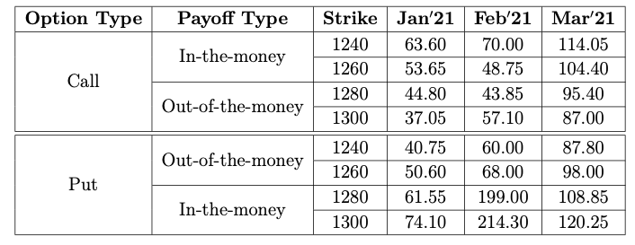

Basic Concepts of Options
In our study of derivative pricing, we have so far examined forwards and futures, which constitute noncontingent claims. These contracts require both the writer and the holder to filfil their obligations to execute the contract at the expiration date. In this chapter, let us shift our focus to another crucial aspect of derivative markets: options. Options are contingent claims that offer a buyer the right, but not the obligation, to buy or sell an underlying asset at a predetermined price within a specified time frame. The buyer acquires the contingent claim by paying a premium to the contract. This unique characteristic of options makes them a valuable instrument for investors seeking strategic opportunities and risk management solutions in financial markets.
There are two primary types of options, namely, a call option and a put option. A call option gives the holder the right, but not the obligation, to buy an underlying asset at a predetermined price, known as the strike price, within a specified period. On the other hand, a put option grants the holder the right, but not the obligation, to sell an underlying asset at the strike price within a specified timeframe.
A key aspect of options theory is the concept of option premiums, their properties, and how their dynamics are modeled. Option premiums are influenced by various factors, including the current market price of the underlying asset, the time remaining until the option expiration, and market volatility. Factors such as interest rates and dividend payments may also affect option premiums. Understanding these factors is essential for traders as they evaluate potential option trades and assess the risk-reward profile of their strategies. Moreover, understanding option pricing mechanics allows investors to make informed decisions and effectively manage their portfolios in dynamic market environments.
In this chapter, we discuss some fundamental properties of option premiums. In Section «Click Here», we begin with an overview of the types of options, including call and put options, as well as the distinctions between American and European options. We also introduce the concepts of option payoffs and gains, providing the relationship between option payoffs and underlying asset prices. An option price comprises intrinsic value and time value. We discuss these two components of option pricing and provide formulas for various cases. Several option premium bounds are examined in Section «Click Here» for both European and American options under the no-arbitrage market condition. We also derive some important properties of option premiums that include the derivation and application of an important relation between the put and call premiums with same strike price and the underlying asset, known as put-call parity. The chapter concludes with key results on the relationship between premiums and strike prices, as well as the convexity property of option premiums.
Basic Terminology
An option contract involves two parties, the party initiating the contract is the writer or the seller of the option contract, while the counter party is the holder or the buyer.
Depending on the trade set in the contract, options can be categorized into two types:
- Call Option: These options grant the holder the right but not the obligation to buy the underlying asset for a specified strike price by (or within) a predetermined time .
- Put Option: These options grant the holder the right but not the obligation to sell the underlying asset for a specified strike price by (or within) a predetermined time.
- Contract issue time, generally taken as \(t=0\);
- Expiration or maturity (date or time or both), denoted by \(t=T\);
- Strike price or exercise price, denoted by \(K\);
- Contract size, also called a lot size, which is the number of units of the underlying assets exercised in a contract; and
- Option premium, denoted by \(X\) in general. When it comes to call option premium, we use the notation C and for the put option premium, we use P.
An option (a call or a put option) can further be categorized into two types depending on the time of execution of the contract. These are the American option and the European option.
American Option: In an American option, the contract can be exercised at any time up to the expiration time.
European Option: In a European option, the contract is allowed to be exercised only on the expiration time.
The underlying asset of an option can include stocks, commodities, or foreign currencies, which are settled by physical delivery. However, there are also underlying assets that cannot be physically delivered at expiration, such as stock indices (like Nifty and Sensex) and interest rates. In these cases, settlements are made in cash by paying the difference between the strike price and the spot price.
Defining Parameters
Let \(S(t)\) (also denoted by \(S_t\)) be the spot market price of the underlying asset at any time \(t\) and \(K\) be the strike price of the option. Let the period of the option be \([0,T]\), where \(T\) is the expiration time or maturity. We proceed to find the payoff of an option at maturity \(T\).
Observe first that, since the holder of an option has no obligation to exercise the option, the holder will exercise it if and only if there is a positive return. This means that
- the holder of a call option will exercise it if and only if \(K < S_T\);
- the holder of a put option will exercise it if and only if \(K > S_T\) (for European options).
Payoff and Gain
We begin by defining the payoff.
A call option is said to be
- in-the-money if \(K < S_t\);
- at-the-money if \(K=S_t\); and
- out-of-the-money if \(K > S_t\),
A put option is said to be
- in-the-money if \(K>S_t\);
- at-the-money if \(K=S_t\); and
- out-of-the-money if \(K < S_t\),
Graphical illustrations of the buyer's payoff s are shown in the following figures.
The intrinsic value of a call option is defined as
and the intrinsic value of a put option is defined as
Observe that we have not incorporated the option premium while defining the payoff in the above definition. The gain (or loss) of an option comprises the payoff in addition to the future value of the premium.
Let \(X\) be the premium paid for an option contract, and \(r\) be the prevailing interest rate continuously compounded. Then the gain (or loss) in a call option is defined as
Similarly, we can define the gain (or loss) in a put option. Illustrations of the gain (depicted by dashed lines) along with the payoff (represented by solid lines) in four possible scenarios are depicted in the following figures.
The future value of the premium \(X\) at time \(T\) with discrete compounding scheme with frequency \(m\) is given by
Therefore, the required gain is given by
Time Value in an Option Price
One may argue for considering the intrinsic value of an option as the price of the option. However, the option price is positive at any time \(t\in [0,T)\), whereas the option value, can be zero if the option is out-of-the-money. This shows that an option price includes more than just the intrinsic value.
The option price can be decomposed into (at least) two parts, namely, the intrinsic value and the time value, and is written as Option Price = Intrinsic Value + Time Value. We use the notations \(C^e(t)\) (or \(C^e_t\)) and \(C^a(t)\) (or \(C^a_t\)), \(t\in [0,T]\), to represent European and American call option prices, respectively, and similar notations for other cases.
From the above decomposition, the time value can be written as

Our interest is to obtain the time value of all the options at \(t=0\) for all the data shown in this table.
Let us take the 1240-strike call option with Jan\(^\prime\)21 expiration, where the option price was \(C^a(0) = 63.6\) and the intrinsic value of the option was
Therefore, the time value of the option is
The same 1240-strike put option was out-of-the-money and therefore, the intrinsic value is given by
Hence, the time value of the option as on 1\(^{\rm st}\) January is
Similarly, we can find the time value for other strike prices and for other expirations.
Premium Bounds and Arbitrage Opportunities
The primary focus of options theory is to determine an appropriate price (premium) for a given option. As we progress into the theory, we will see that this is a difficult task. However, obtaining bounds for the price of an option in a no-arbitrage market is relatively straightforward. Throughout this section, we assume that the market allows short selling and that lending and borrowing occur at the same prevailing interest rate \(r\), with continuous compounding.
European Options
Let us first explore the simplest case of a European option, where the underlying stock does not pay dividends during the option period.
Consider a European call option with
- \(K\)-strike;
- period \([0,T]\); and
- \(t\in [0,T]\) is the present time with premium \(C^e_t\),
where \(r\) is the prevailing annual interest rate continuously compounded.
Upper bound: First, let us prove the upper bound.
Assume the contrary that there is a \(K\)-strike call option with premium \(C^e_0> S_0.\) Then, construct a portfolio using the following trades:
- short \(K\)-strike call option;
- buy the stock in the spot market;
- invest \(C^e_0-S_0\) in a risk-free interest rate instrument up to the expiration date of the call option.
Here, we assumed that one unit of the risk-free instrument costs \(C^e_0-S_0\) (one may simply assume the risk-free instrument as the savings bank account). The value of the portfolio at \(t=0\) is
At time \(t=T\), the value of the portfolio \(\Pi_1\) is given by
Since \(K>0\), \(S_T>0\), and by our assumption \(C^e_0>S_0\), we see that \(V(\Pi_1)(T)>0\) and this happens with probability 1.
This shows that \(\Pi_1\) is an arbitrage portfolio. This contradicts the no-arbitrage market assumption.
Lower bound: Let us now prove the lower bound.
It is clear that \(C^e_0\ge 0\). Therefore, we assume that \(S_0 - Ke^{-rT}>0\) and prove that \(S_0 - Ke^{-rT}\le C^e_0\).
Assume the contrary \(S_0 - Ke^{-rT} > C^e_0.\)
Then, we construct a portfolio by making the following trades:
- short a stock in the spot market at the price of \(S_0\) per share;
- buy one \(K\)-strike call option by paying the premium \(C^e_0\); and
- invest \(S_0-C^e_0\) in a risk-free interest rate instrument up to the expiration date of the call option.
where we have assumed that one unit of the risk-free asset is \(S_0-C^e_0\). The value of the portfolio at \(t=0\) is
At time \(t=T\), make the following trades:
- close the risk-free investment;
- if \(S_T>K\), then exercise the call option;\\ otherwise, buy one stock at the spot market; and
- close the short position at the spot market.
By our assumption, we get (how?)
with probability 1. Thus, \(\Pi_1\) is an arbitrage portfolio.
Consider the European put option
- \(K\)-strike;
- period \([0,T]\);
- \(t\in [0,T]\) is the present time with premium \(P^e_t\),
where \(r\) is the prevailing annual interest rate continuously compounded.
Proof of this theorem is left as an exercise.
The bounds obtained in the above theorem are graphically illustrated in the figure below.
Let us illustrate the bounds proved in Theorem «Click Here» using real-time data. To this end, we have obtained the option chain data for NIFTY with an expiration date of February 24, 2022, from the NSE website
https://www.nseindia.com/option-chain
on February 18, 2022, after the market closed. On that day, NIFTY closed at approximately \(17,276\) points. The last traded price (LTP) of the call options with various strike prices were extracted from the downloaded option chain table. These premiums are depicted in the figure below by a solid blue line, where the roles of the strike price and spot price are interchanged. The dashed lines represent the corresponding bounds obtained from Theorem «Click Here» , while the payoff graph is illustrated by a solid line.
The lower bound is calculated using \(K=17250\) and \(r=0.0675\), which is approximately the 10-year government bond yield as of the last week of February 2022. In the (a) part of the following figure, a zoomed view around \(K\) is provided, representing the nearly at-the-money options.
From this figure, it is evident that there are no arbitrage opportunities according to the considered interest rate \(r\). This can be attributed to the substantial liquidity present in these options. However, as we move away from the at-the-money option, liquidity diminishes, and sometimes visible arbitrage opportunities emerge, particularly at the market's closing time, due to speculators. This phenomenon is clearly observed in the (b)-part of the following figure around strikes greater than 18700, which correspond to far in-the-money options. It is worth noting that at the next day's market opening, such arbitrage gaps either cease to exist or are swiftly filled by arbitrageurs.
Consider the European (call or put) options with
- \(K\)-strike;
- period \([0,T]\);
- premium \(C^e_t\) for call and \(P^e_t\) for put,
where \(r\) is the prevailing annual interest rate continuously compounded.
- The name of the CSV file containing an option chain for NIFTY (download the CSV file from the website provided in Example «Click Here» );
- The spot market value of NIFTY corresponding to the option chain given in the CSV file;
- The prevailing interest rate;
- The expiration time \(T\).
- Read the CSV file;
- Identify all arbitrage opportunities in the option chain based on the estimates provided in Theorem «Click Here» and Theorem «Click Here» ;
- Display the identified opportunities along with the arbitrage gain.
American Options
We now turn our attention to obtaining bounds for an American option premium.
It is important to note that American options offer more flexibility than European options. Consequently, one might expect the premium of an American option to be higher than that of a European option with the same parameters.
- \(K\)-strike, call option;
- option period is \([0,T]\); and
- premium of \(X^e\) for the European option and \(X^a\) for the American option.
- Borrow the amount \(S_T\);
- Settle the contract where we have to buy the asset;
- Supply the asset in the other contract and receive \(S_T\);
- Repay the borrowed money.
In particular, for call options, we always have \(C^e = C^a\) when the underlying asset is a non-dividend-paying stock.
- \(K\)-strike;
- option period \([0,T]\); and
- premium of \(C^e\) for the European option and \(C^a\) for the American option.
The following theorem is a direct consequence of Theorem «Click Here» and Problem «Click Here»
Consider an American call option with
- \(K\)-strike;
- period \([0,T]\); and
- \(t\in [0,T)\) is the present time with premium \(C^a_t\),
where \(r\) is the prevailing annual interest rate continuously compounded.
As noted above, in the case of put options, we have \(P^e \leq P^a\) even if the underlying stock does not pay a dividend during the option period. Therefore, it is crucial to investigate the bounds for American put options. As usual, we begin by considering non-dividend paying stocks as the underlying asset.
Consider the American put option with
- \(K\)-strike;
- period \([0,T]\);
- \(t\in [0,T)\) is the present time with premium \(P^a_t\),
We can obtain the bounds for American options for dividend paying stocks by combining all the results stated so far.
Consider the American (call or put) option with
- \(K\)-strike;
- period \([0,T]\);
- premium \(C^a_t\) for call and \(P^a_t\) for put,
where \(r\) is the prevailing annual interest rate continuously compounded.
Put-Call Parity Estimates
So far, we have obtained the bounds for call and put options. Now, we will discuss the relationship between call and put options in both European and American types.
Let us begin by examining European options and establishing the relationship.
Consider two European options, one call and one put with
- \(K\)-strike;
- period \([0,T]\); and
- the premium \(C^e_t\) for the call option and the premium \(P^e_t\) for the put option are at the present time \(t\in [0,T)\).
where \(r\) is the prevailing annual interest rate continuously compounded.
Case 1: Assume the contrary that \(C^e_0 - P^e_0 > S_0 - Ke^{-rT}.\)
Let us construct the portfolio \(\Pi_1\) using the following trades:
- buy a share at the spot market for \(S_0\) per share;
- take a long position in one put option;
- write one call option; and
- invest (or borrow if negative) the sum \(C^e_0-P^e_0-S_0\) in a risk-free interest rate investment.
by our assumption. Complete the proof.
Case 2: Assume the contrary that \(C^e_0 - P^e_0 < S_0 - Ke^{-rT}.\)
Let us construct the portfolio \(\Pi_1\) using the following trades:
- short a share at the spot market for \(S_0\) per share;
- write one put option;
- go long in one call option; and
- invest (or borrow if negative) the sum \(S_0-C^e_0+P_0^e\) in a risk-free interest rate investment.
We now obtain the put-call parity for American options.
Consider two American options, one call and one put with
- \(K\)-strike;
- period \([0,T]\); and
- premium \(C^a_t\) for the call option and \(P^a_t\) for the put option are at the present time \(t\in [0,T).\)
where \(r\) is the prevailing annual interest rate continuously compounded.
We prove the result for \(t=0\).
Let us first consider the upper bound.
Assume the contrary that \(C^a_0-P^a_0-S_0+Ke^{-rT} > 0\).
Construct the portfolio \(\Pi_1\) with the following trades:
- write one call option and get the premium \(C^a_0\);
- buy one put option by paying the premium \(P^a_0\);
- buy one share by paying \(S_0\); and
- invest (borrow if negative) the remaining \(C^a_0-P^a_0-S_0\) in a risk-free interest rate investment.
Let \(t=\tau\in [0,T]\) be the exercise time of the short call option. The payoff of \(\Pi_1\) at \(t=\tau\) is
Using our assumption, we can see that \(V(\Pi_1)(\tau) > 0\) (how?). From the above inequality, we can see that, although \(\tau\) and \(S_\tau\) are random, finally, the required positivity does not depend on these variables. Thus, the positivity of the portfolio happens with probability 1, and therefore \(\Pi_1\) is an arbitrage portfolio.
Let us now consider the lower bound.
Assume the contrary that \(C^a_0 - P^a_0 - S_0 + K < 0\).
Construct the portfolio \(\Pi_1\) with the following trades:
- write one put option and get the premium \(P^a_0\);
- buy one call option by paying the premium \(C^a_0\);
- short one share and get \(S_0\); and
- invest (borrow if negative) the remaining \(P_0^a-C_0^a+S_0\) in a risk-free interest rate investment.
Let \(t=\tau\in [0,T]\) be the exercise time of the short put option. The payoff of \(\Pi_1\) at \(t=\tau\) is
From our assumption, we see that \(V(\Pi_1)(\tau)>0\) (how?). Complete the arbitrage arguement.
Premium Valuation
So far, we have studied some important estimates of call and put options having the same strike price. In this subsection, we study some basic properties of options prices depending on their strike prices. Let us include the strike price into the notation of option prices.
For any \(t\in [0,T]\) and for a positive real number \(K\),
- \(C^e(t,K)\) or \(C^e_t(K)\) denotes the European call option price (or premium) at time \(t\) whose strike price is \(K\). For an American call option, we use the notation \(C^a(t,K)\) or \(C^a_t(K)\).
- \(P^e(t,K)\) or \(P^e_t(K)\) denotes the European put option price (or premium) at time \(t\) whose strike price is \(K\). For an American put option, we use the notation \(P^a(t, K)\) or \(P^a_t(K)\).
If the underlying stock does not pay a dividend during the option period and the market does not allow arbitrage, then
for any \(0\le K_1 \le K_2,\) where \(r\) is the prevailing interest rate continuously compounded, all the options have the same period \([0,T]\) and \(t\in [0,T)\) is the present time.
Let us first consider the lower bound.
- Lower bound for call options:
Assume the contrary that \(C^e_0(K_1 ) < C^e_0(K_2 ).\)
Construct a portfolio \(\Pi_1\) using the following trades:
- write the \(K_2\)-strike call option;
- buy the \(K_1\)-strike call option; and
- invest \(C^e_0(K_2 ) - C^e_0(K_1 )\) in a risk-free interest rate investment.
At time \(t=T\), the value of \(\Pi_1\) is
where
Since \(K_1\le K_2\) and by our assumption, we see that \(V(\Pi_1)(T) > 0\), leading to a contradiction to the no-arbitrage principle.
Subtracting, we get
Since both the terms in the brackets on the left-hand side are nonnegative as per the lower bounds, we see that each one is less than or equal to the right-hand side.
In the next theorem, we show that \(C^e\) and \(P^e\) are convex functions of \(K\), a characteristic often observed in the market. However, the mathematical proof requires the assumption that the market allows trading fractional units.
Assume that the market does not allow arbitrage, permits fractional unit trades, and allows short selling. For any \(\alpha\in [0,1]\) and for any positive real numbers \(K_1\) and \(K_2\), we have
where all the options have the same expiration.
Call Option: Assume the contrary that
Construct a portfolio \(\Pi_1\) using the following strategies:
- write the \(K\)-strike call option;
- buy \(\alpha\) units of \(K_1\)-strike call options;
- buy \(1-\alpha\) units of \(K_2\)-strike call options; and
- invest \(C^e\big(K \big)-\big(\alpha C^e(K_1 ) + (1-\alpha)C^e(K_2 )\big)\) in a risk-free interest rate instrument.
where
It can be proved that \(x_0\ge 0\).
Put Option: Convexity of the put option price can be proved in two ways,
- by constructing an arbitrage portfolio; and
- using convexity of call option price and the put-call parity result in Theorem «Click Here» .
We prove the result for \(t=0\).
From Theorem «Click Here» , we have
This implies
Again using Theorem «Click Here» , we get the desired result.
We now state the equivalent theorems in the case of American options. The proofs are left as exercises.
If the underlying stock does not pay a dividend during the option period and the market does not allow arbitrage, then show that
for any \(0\le K_1 \le K_2,\) where \(r\) is the prevailing interest rate continuously compounded, all the options have the same period \([0,T]\), and \(t\in [0,T)\) is the present time.
For any \(\alpha\in [0,1]\) and for any positive real numbers \(K_1\) and \(K_2\), show that
where all the options have the same period \([0,T]\), and the market does not allow arbitrage.